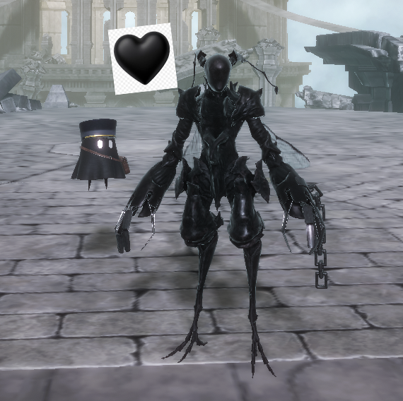

NieR Reincarnation - 672 hours remain
The end of the 6th Chapter left me gobsmacked. Spoilers ahead. The girl is, actually, a monster named Levania, who devoured the dreams and form of the original Girl (Fio?). She regains all the parts of herself, and decides she wants to make Fio human again (as Fio became a monster instead). And then the game does a timeskip "4 months earlier".
Gobsmacked. Gobsmacked, I say! I just met the, uh, pre-timeskip (haha) Levania, and their design fucks so hard. I love them. And I just met carrier, and their design fucks so hard, and I love them! Fucking on the floor gorbino style. They're phenomenal already.

Carrier and Levania 🖤
God, I fucking love timeskips. Peak alert! Shoutouts to Kip for coming up with the idea of "gorbino style". I've been watching Community with them the past few days, and they're currently hopping into Dragon Quest 7 on their modded 3ds. They're streaming it to their computer at, like, 5 frames per second. It's peak. Everything's peak.
4/1/2024 11:45:15 PM CST